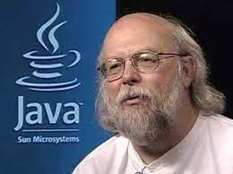
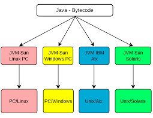
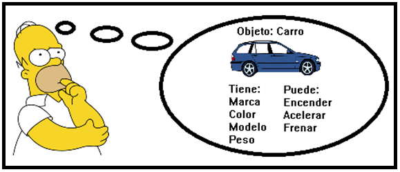

Introducción a Java
La tecnología se ha convertido en indispensable en casi todos los aspectos de nuestra vida. Lo mismo ha ocurrido dentro de las empresas. Los conocimientos en programación son una habilidad cada vez más demandada. Entre los lenguajes de programación más usados y demandados está Java, un lenguaje de programación cuya sencillez, seguridad y portabilidad le ha llevado a mantenerse dentro de los lenguajes más populares durante años.
Historia de Java
Conocer la historia de Java es importante, ya que nos ayuda a comprender la filosofía que está detrás de este lenguaje de programación.
Java es un lenguaje de programación orientado a objetos desarrollado por James Gosling y sus colegas en Sun Microsystems a principios de la década de 1990.
Java se inició como un proyecto llamado "Oak" por James Gosling en junio de 1991. Los objetivos de Gosling eran implementar una máquina virtual y un lenguaje que tuviera una notación familiar similar a C pero con mayor uniformidad y simplicidad que C/C++. La implementación fue Java 1.0 en 1995. Hizo la promesa de "Escribir una vez, ejecutar en cualquier lugar", con tiempos de ejecución gratuitos en plataformas populares. Era bastante seguro y su seguridad era configurable, lo que permitía limitar el acceso a la red y a los archivos. La red principal Los navegadores pronto lo incorporaron a sus configuraciones estándar en una configuración segura de "applet". Pronto se diseñaron nuevas versiones para plataformas grandes y pequeñas (J2EE y J2ME) con la llegada de "Java 2".

James Gosling
A diferencia de los lenguajes convencionales que generalmente están diseñados para compilarse en código nativo (máquina) o para interpretarse a partir del código fuente en tiempo de ejecución, Java está diseñado para ser compilado en un código de bytes, que luego se ejecuta (generalmente usando la compilación JIT) por una máquina virtual de Java.
El lenguaje en sí mismo toma prestada mucha sintaxis de C y C++ pero tiene un modelo de objeto más simple y menos facilidades de bajo nivel. Java tiene una relación lejana con JavaScript, aunque tienen nombres similares y comparten una sintaxis similar a la de C.
Objetivos principales en la creación del lenguaje Java:
- Utilizar la metodología de programación orientada a objetos.
- Permitir que el mismo programa se ejecute en múltiples sistemas operativos.
- Contener soporte incorporado para el uso de redes informáticas.
- Estar diseñado para ejecutar código de fuentes remotas de forma segura.
- Ser fácil de usar seleccionando las partes buenas de otros lenguajes orientados a objetos.
Para lograr los objetivos de compatibilidad con redes y ejecución remota de código, los programadores de Java a veces encuentran necesario usar extensiones.
El objetivo principal era idear un lenguaje que fuera independiente de la máquina en la que iba a ejecutarse ("Escríbelo una vez, ejecútalo en cualquier lugar"). Inicialmente, la idea era poder usarlo en cualquier aparato doméstico, como aparatos de TV o, incluso, hornos o tostadoras, pero es posible que fuera una idea demasiado avanzada para la época. La llegada de Internet lo cambió todo. Java encajaba perfectamente con el concepto, ya que Internet es un conjunto de máquinas diferentes conectadas entre sí. Pronto, el equipo comenzó adaptar Java a las necesidades de la red. El 23 de mayo de 1995, durante las conferencias de SunWorld, se hizo la presentación al público de Java y HotJava, un navegador web, diseñado para demostrar las capacidades de su tecnología. En esa misma conferencia, se anunció que Netscape incorporaría la tecnología Java a sus navegadores. Una de las funcionalidades más importantes de Java eran los applets que eran piezas de código, capaces de viajar por la red y ejecutarse inmediatamente en un navegador compatible. Su portabilidad y seguridad hizo que la mayoría de los navegadores comenzaran a incluir la máquina virtual de Java. Todo esto ha hecho que no solo Java haya ido adaptándose a las necesidades de Internet, sino que Internet se ha modelado también en torno a Java. Sin Internet, Java no tendría hoy la importancia que tiene, y no sabemos sin Internet hubiera podido avanzar tan rápidamente sin la invención de Java. Java ha sio un lenguaje muy dinámico, y ha sabido avanzar muy bien en todo momento. Muchas de las webs más visitadas, como Google, YouTube, LinkedIn, Facebook, Amazon, Twitter o Ebay tienen parte de su código el servidor implementado en Java. También la mayor parte de las aplicaciones Android están escritas total o parcialmente en Java. Hoy en día, Java es un lenguaje consolidado y con un gran futuro por delante. Hay millones de desarrolladores Java alrededor del mundo, que continúan trabajando con él por su practicidad, fiabilidad y compatibilidad.
Características de Java
Java es tanto un lenguaje compilado como interpretado. El código Java se compila en un bytecode independiente de la máquina. Los códigos de bytes se interpretan para la máquina en particular en la que se ejecutan. De esta manera, Java se vuelve independiente de la máquina. Ese no es el caso de lenguajes como C/C++, donde el código del lenguaje se compila en código ensamblador para una máquina en particular. Un linker convierte ese código en un ejecutable para esa máquina.
La principal característica de Java es su portabilidad. La idea es que el mismo código debe poder ser ejecutado en cualquier máquina, independientemente de su arquitectura o de su sistema operativo. Cuando compilamos un código lo que estamos haciendo es traducirlo a un lenguaje que puede ser entendido por la máquina en la que va a ser ejecutado. Lo estamos traduciendo a código máquina. Este código máquina depende de la arquitectura y del sistema operativo de la máquina. En el caso de Java, el código se traduce a bytecode. Este bytecode es interpretado por una máquina virtual de Java (JVM).

Se puede desarrollar una máquina virtual de Java para cualquier máquina, por lo tanto, como dice el eslogan de Sun Microsystems, solo deberemos escribir nuestro código una vez, compilarlo a bytecode, y podremos ejecutarlo en cualquier máquina, ya que la máquina virtual de Java será la encargada de traducir el bytecode a código máquina. Uno puede pensar que este paso añadido de traducción de bytecode a código máquina puede hacer de nuestros programas más ineficientes, pero la máquina virtual de Java está tan optimizada que en la práctica no se nota. Java es un lenguaje orientado a objetos, esto quiere decir que permite declarar nuevos tipos de datos junto con las operaciones que se pueden realizar sobre ellos, y que permite instanciar objetos de ese tipo en diferentes partes de nuestro programa.
Orientación a objetos
La Orientación a Objetos (OO) es un método de programación y diseño de lenguajes. Una idea principal es la de diseñar software de modo que los diversos tipos de datos que manipula se combinen junto con sus operaciones relevantes. Los datos y el código se combinan en entidades llamadas objetos. Un objeto es un paquete autónomo de comportamiento (código) y estado (datos). El principio es separar las cosas que cambian de las cosas que permanecen igual. A menudo, un cambio en alguna estructura de datos requiere un cambio correspondiente en el código que opera en esos datos, o viceversa. Esta separación en objetos coherentes proporciona una base más estable para el diseño de un sistema de software. La intención es hacer que los grandes proyectos de software sean más fáciles de administrar, mejorando así la calidad y reduciendo el número de proyectos fallidos.
Otro objetivo principal de la programación OO es desarrollar objetos más genéricos para que el software pueda volverse más reutilizable entre proyectos. Un objeto genérico debe tener aproximadamente el mismo conjunto básico de comportamientos entre diferentes proyectos de software, especialmente cuando estos proyectos se superponen en algún nivel fundamental, como ocurre a menudo en las grandes organizaciones. Es de esperar que los objetos de software se vean más como componentes conectables, lo que ayuda a la industria del software a construir proyectos en gran parte a partir de piezas existentes y bien probadas, lo que lleva a una reducción masiva de tiempos de desarrollo. La reutilización del software se ha encontrado con resultados prácticos mixtos, con algunas dificultades: el diseño de objetos verdaderamente genéricos no se comprende bien y falta una metodología para una comunicación amplia de las oportunidades de reutilización. Algunas comunidades de código abierto quieren ayudar a aliviar el problema de la reutilización, proporcionando a los autores formas de difundir información sobre objetos generalmente reutilizables y bibliotecas de objetos.
Pincipios de la Programación Orientada a Objetos que Java nos permite implementar:

Abstracción: La abstracción es la capacidad de poder centrarnos en lo que hacen los objetos sin necesidad de saber cómo lo hacen. Es algo que hacemos los humanos en el día a día para representar mentalmente lo que nos rodea. Por ejemplo, cuando conducimos un coche sabemos qué efecto producirá cuando pisemos uno de sus pedales, pero no necesitamos saber la mecánica que hay detrás de ello.
Encapsulación: La encapsulación nos permite proteger nuestro código y nuestros datos de ser manipulados desde el exterior de una manera diferente a la que se ha diseñado por nosotros. Nuestros objetos solo se podrán manipular por quien tenga derecho a ello, y solo mediante las operaciones que hayamos definido para ello.
Polimorfismo: es la capacidad de poder enviar mensajes similares a objetos de tipos diferentes. Un ejemplo en la vida real pueden ser los mandos a distancia. Podemos usar un mismo mando para manejar aparatos diferentes.
Herencia: La herencia es un mecanismo mediante el cual un objeto puede adquirir las propiedades de otro. Esto nos permite crear jerarquías en las que los objetos de más arriba definen características más generales, y conforme vamos bajando, definiremos características más específicas, sin necesidad de repetir las que podemos reutilizar.
Cualidades declaradas como más importantes por el equipo de desarrolladores de Java:
- Java fue diseñado para que su aprendizaje y utilización fueran sencillos, tanto para quien está aprendiendo como para quien viene de otros lenguajes como C, o C++.
- Java soporta la ejecución multitarea o multihilo; esto quiere decir, que varias partes de nuestro código pueden ser ejecutadas a la vez, y hacen nuestros programas más ágiles, permitiendo al usuario no quedarse bloqueado en una tarea.
- El hecho de que Java sea compilado a bytecode, que luego es traducido por la máquina virtual de Java, hace de este un lenguaje interpretado e independiente de la arquitectura.
- El hecho de que la máquina virtual sea la que controla la ejecución, también hace del lenguaje más seguro. Al estar la máquina virtual de Java muy optimizada, podemos conseguir un alto rendimiento en nuestras aplicaciones.
- Java fue diseñado para la web, y tiene una serie de clases que facilitan el desarrollo de aplicaciones distribuidas.
- Java es un lenguaje robusto, porque tiene muchos mecanismos que liberan al programador de preocuparse por errores comunes, como por ejemplo, la gestión de memoria. Comprueba el código durante la compilación y durante la ejecución, y los errores que se producen suelen ser fácilmente localizables.